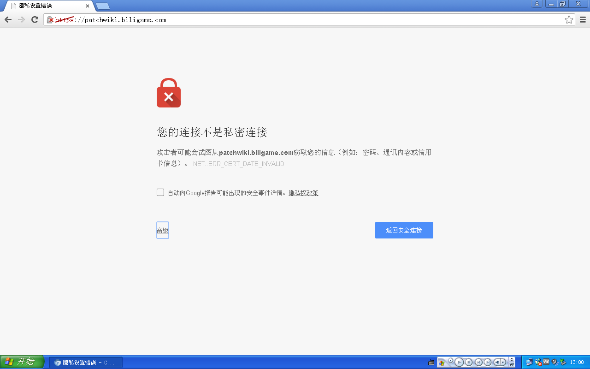
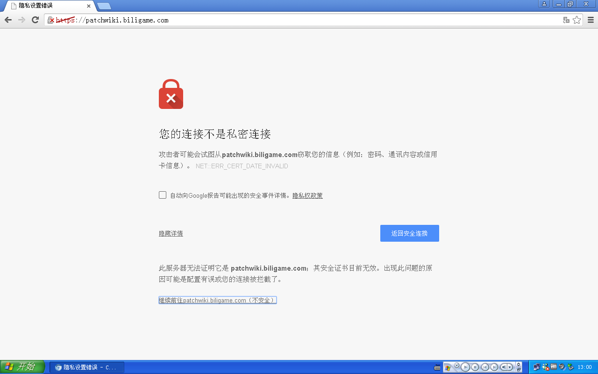

答：因为旧的浏览器不支持现在的HTTPS请求和响应，故浏览器将外部api的部分请求和响应一律视为不安全的连接。
可行的解决方法是允许对这些网站的请求，具体操作如下：
如ip未知，访问https://ipapi.co/json
如材料图片加载失败，访问https://patchwiki.biligame.com
之后会有如下提示，单击高级：

再单击“继续前往****”

之后重新访问刚才失败的网页，问题修复。